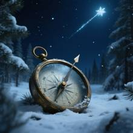
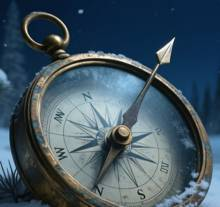
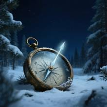
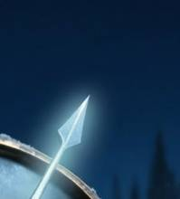

Compound — Generating picture: An ancient brass compass is abandoned on the snowy
Generating picture: An ancient brass compass is abandoned on the snowy forest floor. Its hands do not point north and south, but point with a glimmer at an invisible star in the sky.

Judge — Direct
- FAILCompound - Imagination — The prompt requires the compass to point with a glimmer at an invisible star in the sky. In the generated image, there is a very prominent, visible star in the sky. The compass needle does not appear to be pointing at this star, nor does it have a special glimmer. The key element of the star being 'invisible' is directly contradicted by its visual presence.
- FAILLogical Reasoning — The image successfully depicts an ancient brass compass on a snowy forest floor. The compass hands are pointing towards the 'NNW' mark, thus not pointing north and south. However, the core logical requirement is for the compass to point to an 'invisible star'. The image instead shows a very visible star in the sky, and the compass needle is not aligned with it. This fails to represent the logical premise of the compass indicating an unseen object.
Judge — Continuum
- PASSCompound - Imagination — The image depicts a compass whose needle is glowing with a white light, or 'glimmer'. The needle is pointing upwards, towards the dark night sky, rather than horizontally along the compass face. This action of a compass needle pointing at the sky with a magical glow is an imaginative concept, impossible in reality.
- PASSLogical Reasoning — The image shows a brass-cased compass that has a weathered or aged appearance, consistent with being 'ancient'. It is resting partially submerged in snow in a forest setting. The compass's needle, which is glowing, is not aligned with the 'N' (North) and 'S' (South) markings on its dial. Instead, it is angled upwards, pointing towards the dark sky, which visually represents the concept of pointing to an 'invisible star'.
What the agent did
Thinking
The user is asking for a picture: "An antique brass compass is abandoned on the floor of a snowy forest. Its needle points not to north or south, but with a gleam toward an invisible star in the sky." Key elements: 1. Antique brass compass 2. Abandoned on the floor of a snowy forest 3. The needle points neither to north nor south, but toward an invisible star in the sky (with a gleam) This is a beautiful conceptual image. The compass is on the snowy forest floor, and its needle points upward / toward the sky where an invisible star is. The needle has a gleam. Let me think about how to render this. "An invisible star" — that's a bit tricky. The star is invisible, but the needle points to it with a gleam. So probably: the compass needle glows / shimmers faintly, points diagonally upward into the snowy sky (or at least away from N/S), and there may be a faint streak of light at the star's location — but the star itself is invisible, so maybe there's just a subtle, faint sparkle where the needle is pointing. I could interpret it as: the needle is angled oddly (not aligned N-S), with a subtle magical gleam, pointing toward a distant point in the sky where a very faint, barely visible glimmer of light exists — almost like a suggestion of an invisible star. Composition: low angle, close-up of a brass compass lying on snow-covered ground among pine trees, snow, and a dark winter night sky with a few faint stars. The compass needle glows faintly, pointing upward / diagonally. Let me generate with qwen-image. The prompt should be concrete: "Antique brass compass abandoned on a snowy forest floor, close-up low angle, aged brass with engraved markings and a glass dial, compass needle pointing diagonally upward toward the winter night sky, needle shimmering with a faint magical silver-blue glimmer, the compass needle clearly NOT pointing north, instead tilted toward a distant point in the dark starry sky, faint subtle glimmer of light in the dark sky where the invisible star is, snow-covered pine trees in background, falling snowflakes, dark blue night, cinematic moody lighting, photorealistic, shallow depth of field" Let me craft the generation prompt carefully. qwen-image is good at following prompts. I should make sure the needle is clearly visible and that it glows. Let me generate first, then inspect, then edit. Plan: 1. generate_image with qwen-image, default 1024x1024? The default size is 1024x1024. The harness controls the size. Leave width/height at defaults (probably 1024x1024). Actually, the instructions say "size and seed are controlled by the harness" — I shouldn't set the seed, and I shouldn't try to change the size either. Just call with the prompt and model only. 2. Inspect the result, particularly the compass needle direction and the gleam. 3. Edit as needed. 4. Call mark_best at the point when it's in a submittable state. Let me write the prompt: "An antique brass compass with an aged tarnished patina, its glass dial slightly cracked, abandoned on the snow-covered forest floor between snow-dusted pine trees at night. The compass needle does not point to the N or S markings — it points diagonally upward toward the dark winter sky, shimmering with a faint silver-blue magical glimmer, as if drawn to an invisible star. Deep dark blue night, a few faint stars, soft falling snowflakes, moonlit snow, cinematic, photorealistic, shallow depth of field, moody atmospheric lighting." I think that's good. Let's generate.
Step 1 — `generate_image`
{
"model": "qwen-image",
"prompt": "An ancient brass compass with aged tarnished patina and engraved markings, its glass dial slightly frosted, abandoned on the snowy forest floor between snow-dusted pine trees at night. The compass needle does NOT point to the N or S markings \u2014 it points diagonally upward toward the dark winter sky, shimmering with a faint silver-blue magical glimmer, as if drawn to an invisible star above. Deep dark blue night sky with a few faint stars, a subtle barely-visible glimmer of light high in the sky in the direction the needle points, soft falling snowflakes, moonlit snow ground, cinematic moody lighting, photorealistic, shallow depth of field."
}Result img_0

Thinking
Let me examine the results: 1. An antique brass compass lying on a snowy forest floor — ✓ Good, brass with a ring, tilted, snow on top, pines in the background, a snowy night. 2. The compass needle: it's pointing upward — the glowing needle extends diagonally upward, past the rim of the dial, toward the sky. Good, not N/S. 3. But the star: the prompt said "invisible star" — but the image shows a very bright, visible snowflake-shaped star with a shooting star trail. That's fairly visible, not "invisible." The prompt says "points with a shimmer to an invisible star in the sky." So the star should be invisible — meaning the needle points at nothing visible, or at most a very faint shimmer. Currently there's a very bright star-shaped snowflake with a shooting star trail — that's too visible. Hmm, "invisible star" — the ideal rendering would be: the needle glows and points to a location in the sky where there's almost nothing, perhaps with just a faint shimmer. The bright snowflake star and shooting star trail contradict "invisible." Also the needle itself: does it look like it's protruding out of the dial? Actually, looking carefully, the needle is a long, slender metallic pointer extending from the center, pointing diagonally upward toward the star. That's a stylized compass needle, and it works fine visually. But is it glowing? It looks like a silvery metallic glint. The prompt says "points with a shimmer" — the needle should shimmer. It kind of does (bright silver), but it could be made to glow a bit more. Also, the star shape is a snowflake, and it's very bright, with a shooting star trail. "Invisible star" means the star itself should not be visible — perhaps a very faint shimmer of light at the point where the needle is pointing. Let me zoom in and check the details of the compass and needle. Actually, let me consider the overall composition. The main issues: - The star is too visible (bright snowflake + shooting star). To convey "invisible star," it should be reduced to a faint shimmer, or removed entirely so the needle points at nothing. - The needle's shimmer could be emphasized (a soft blue glow). Let me use edit_image: "replace the bright snowflake star and shooting star trail in the sky with a very faint, subtle shimmer of light — almost invisible, just a soft glimmer at the point where the compass needle is pointing. Also make the compass needle shimmer with a soft silver-blue glow." Hmm, but be careful: "the needle points with a shimmer to an invisible star" — the shimmer is on the pointing (the needle/pointing), and the star is invisible. So a faint shimmer where the star would be is acceptable, but a bright star is not. First, let me inspect the compass area at full resolution to check the state of the needle and dial.
Model
The first result has a good composition — an old brass compass in a snowy night forest, and the needle is pointing upward, diagonally. However, the "star" has been rendered as a very bright snowflake and shooting-star streak, which contradicts the *invisible* star. Let's zoom in on the compass and sky to check.
Step 2 — `inspect_region`
{
"image": "img_0",
"roi": [
200,
330,
720,
820
]
}Result img_1

Step 3 — `inspect_region`
{
"image": "img_0",
"roi": [
550,
30,
820,
280
]
}Result img_2
Thinking
The compass itself is excellent: an aged brass rim, the ring on top, a dial with N/E/S/W markings, a star-shaped rose, and a needle pointing upward at a diagonal angle toward the sky (clearly not N/S). The needle is metallic silver, with a bright tip. It might be nice to add a soft glow. The star is a very bright snowflake with a shooting-star trail, way too "visible" to be called an "invisible star." The prompt calls for an invisible star, so the star shouldn't be visible as a star at all, or at most a faint shimmer should be present. I want to weaken it dramatically: replace the bright snowflake star and the shooting-star trail with a very faint, subtle shimmer of light, almost invisible. Edit plan: use edit_image on img_0. Prompt: "Replace the bright snowflake star and the shooting-star light trail in the sky with an extremely faint, subtle shimmer, almost invisible, just a soft glimmer of light at the spot where the compass needle is pointing. The star must not be a bright snowflake shape, just a faint sparkle. Also give the compass needle a soft silver-blue shimmering glow. Keep everything else the same." Hmm, per the editing discipline: state only the changes in concrete visual language. Let me try writing it: "Dim the bright snowflake star in the sky into a faint, barely-visible sparkle of light, and erase the shooting-star light trail, leaving only a subtle glimmer at the spot where the compass needle points. Give the compass needle a soft silver-blue shimmering glow." This is a delta (difference) description. Good. Let's execute.
Model
The compass is beautifully done — the aged brass, the ring, the rose (compass dial), and the needle pointing diagonally upward, away from N/S. The only thing that's off is the sky: a bright snowflake-shaped star and shooting star are drawn, but the prompt requires that star to be *invisible*. Let's weaken this to a faint shimmer.
Step 4 — `edit_image`
{
"image": "img_0",
"model": "qwen-image",
"prompt": "Dim the bright snowflake star in the sky into a faint, barely-visible glimmer of light, and remove the bright shooting-star light trail behind it, leaving only a subtle soft shimmer high in the dark sky at the point the compass needle points toward. Give the compass needle a soft silver-blue shimmering glow along its length."
}Result img_3

Thinking
The edit was successful: - The bright snowflake star and shooting star are gone. - The sky is now a dark night sky with a few faint stars. - The compass needle now glows with a silver-blue shimmer as it points diagonally upward toward the dark sky — a very faint sparkle is just barely visible at the tip of the needle (around the upper right of the needle). Let me zoom in to check whether there's a subtle shimmer where the needle is pointing, and whether the needle is glowing. I'll check the sky/needle region and the compass at full resolution.
Model
The bright stars are gone. Now there's a dark sky, and the needle is glowing as it points diagonally upward. Let me zoom in and check the needle's sparkle, and whether there's a faint shimmer at the position it's pointing to.
Step 5 — `inspect_region`
{
"image": "img_3",
"roi": [
480,
250,
760,
560
]
}Result img_4

Thinking
The tip of the needle is glowing with a soft silver-blue light. The sky above is dark with only very faint stars, and no visible stars exist at the position the needle is pointing toward, matching the description of an "invisible star." The shimmer is on the pointing needle itself. This is exactly the effect the prompt was asking for: "pointing with a shimmer to an invisible star in the sky." Everything matches the prompt: 1. An antique brass compass abandoned on a snowy forest floor ✓ (aged brass, ring, snow, pine trees, night) 2. The needle is pointing neither north nor south ✓ (pointing diagonally upward toward the sky) 3. Pointing with a shimmer to an invisible star ✓ (the needle glows silver-blue, the star is invisible, only a faint shimmer) This is a very good result. I'll mark img_3 as the best and finish. Is there anything else to fix? The needle now appears as a glowing pointer extending from the dial toward the sky. There's also a small glowing counterweight at the bottom. No problem. The composition is cinematic, photorealistic, and moody. I think this is a strong final version. I'll mark it and stop.
Model
At the needle's tip, there's a soft silver-blue shimmer, and the sky it's pointing toward is left empty, with no visible star, just as the prompt requires. All the elements are in place: - **Antique brass compass**: Aged, tarnished brass, hanging ring, compass rose with N/E/S/W markings, snow piled on top of the glass, abandoned in the snow - **Snowy forest floor**: Pines covered in snow, a moonlit snowy ground, night setting - **Needle doesn't point N/S**: It points diagonally upward toward the sky - **Shimmer toward the invisible star**: A soft glow along the needle, and the sky at that position is left dark and empty This matches the prompt, so I'll mark it as the final result.
Step 6 — `mark_best`
{
"image": "img_3",
"reason": "Ancient brass compass abandoned on the snowy forest floor at night; needle points diagonally upward (not N/S) with a soft silver-blue glimmer toward a dark sky where the star remains invisible, matching every element of the prompt."
}Thinking
I marked the best image. The image matches the prompt. I'll stop here and convey a concise summary to the user.
Model
Done. The final image shows the ancient brass compass abandoned on the snowy forest floor at night, with snow-dusted pines around it. Its needle shimmers with a soft silver-blue glow, pointing diagonally upward — away from the N and S markings — toward the dark sky, where the star itself remains invisible, just as described. The bright star from the first draft was dimmed to preserve that "invisible star" quality, leaving only the glimmer on the pointing needle.